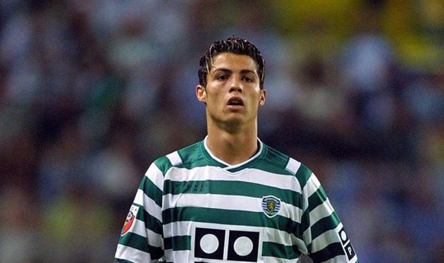
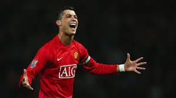
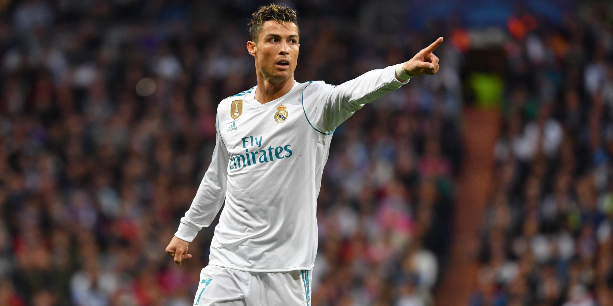
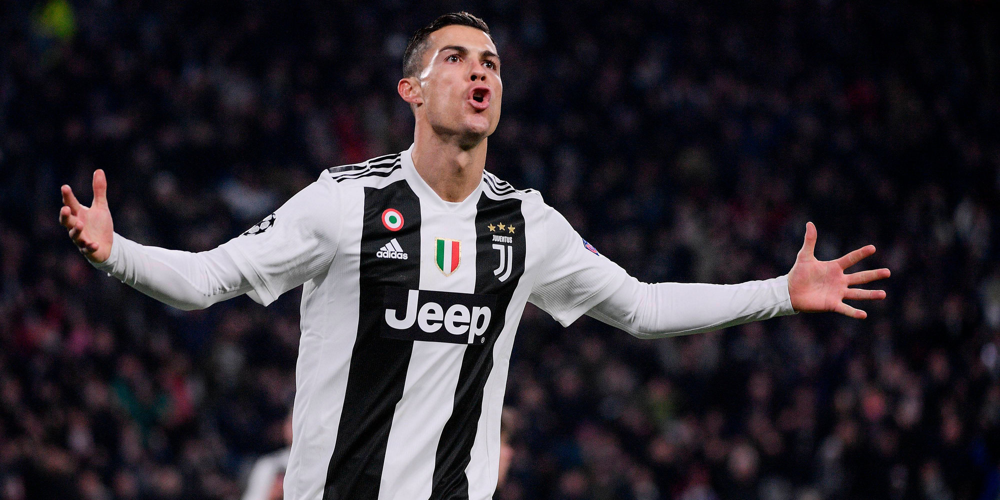
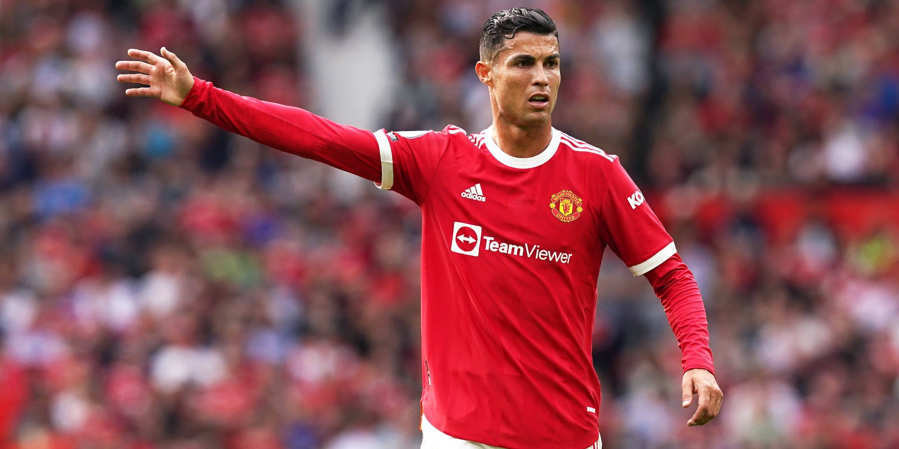
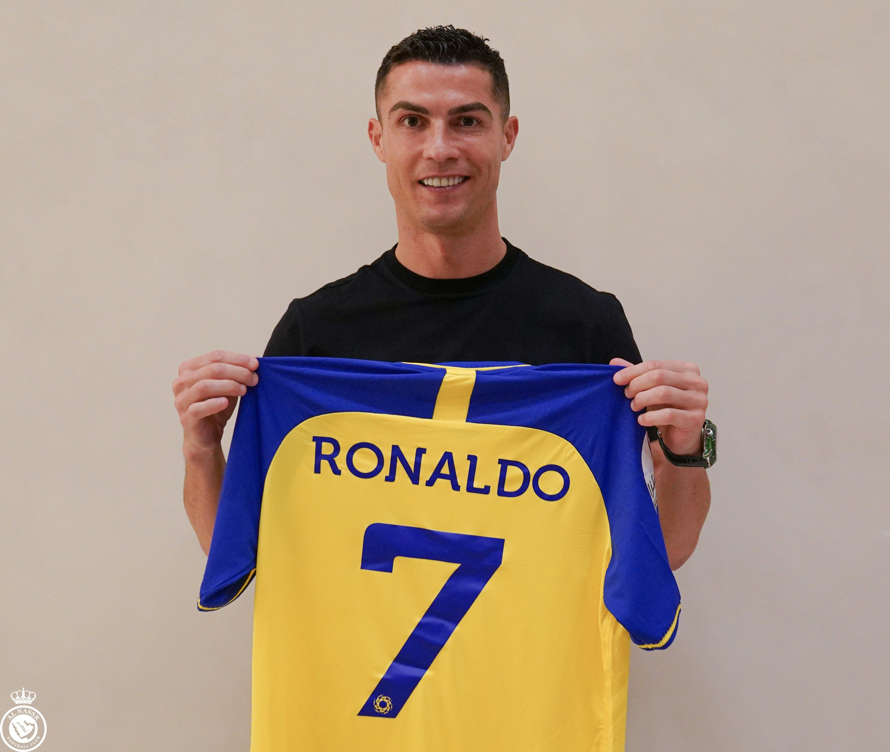

Кріштіа́ну Рона́лду душ Са́нтуш Аве́йру (порт. Cristiano Ronaldo dos Santos Aveiro, нар. 5 лютого 1985,
Фуншал, Мадейра, Португалія) — португальський футболіст, нападник саудівського клубу «Ан-Наср» та збірної
Португалії, у складі якої є капітаном, а також рекордсменом за кількістю ігор і забитих голів. 27 грудня 2021
року Globe Soccer Awards назвали Роналду найкращим бомбардиром усіх часів[6]. Перший у світі
футболіст-мільярдер (2020)
П'ятиразовий володар Золотого м'яча 2008, 2013, 2014, 2016 та 2017 років.
Шість разів ставав другим футболістом світу 2007, 2009, 2011, 2012, 2015 та 2018 років. Третій футболіст
світу
2019 року.
Чотириразовий володар Золотого бутса УЄФА 2008, 2011, 2014 та 2015 років.
Фіналіст Євро-2004 у складі збірної Португалії. Визнаний найкращим молодим гравцем чемпіонату Європи 2004
року.
Переможець чемпіонату Європи — 2016 у складі збірної Португалії.
Переможець Ліги чемпіонів сезонів 2007–2008, 2013—2014, 2015—2016, 2016—2017 та 2017–2018 років.
Спортінг

Роналду став єдиним гравцем «Спортінга», який грав за юнацькі команди клубу до шістнадцяти, до сімнадцяти, до
вісімнадцяти років, дублі «Спортінга» й основну команду за один сезон
У 16 років футболістом зацікавився тренер «Ліверпуля» Жерар Ульє (Gerard Houllier), але клуб відмовився взяти
Роналду, вирішивши, що португальцеві спершу слід розвинути свої футбольні навички. Влітку «Спортинг»
зустрічався з «Манчестер Юнайтед». Вже після першого тайму здивовані грою Роналду гравці вмовили Фергюсона
викупити Роналду. У тому матчі «Спортинг» переміг «Манчестер Юнайтед».
Манчестер Юнайтед

Роналду дебютував за «Манчестер Юнайтед», вийшовши на заміну в матчі проти «Болтон Вондерерз». Довіру Фергюсона
він виправдав у першому ж сезоні, за результатами якого отримав Приз сера Метта Басбі найкращому гравцеві
сезону 2003/2004 (Sir Matt Busby Player of the Year). Премія, яку присуджують за підсумками голосування
уболівальників «Манчестер Юнайтед», стала першою особистою нагородою в професійній кар'єрі футболіста
Реал Мадрид

«Реал Мадрид» і «Манчестер Юнайтед» 26 червня 2009 підписали угоду про перехід півзахисника в іспанський
клуб. В рамках контракту Роналду проведе в «Реалі» шість сезонів, а його зарплата складатиме 13 мільйонів
євро в рік, це рекордна для футболу сума — до того найвисокооплачуванішим футболістом світу був форвард
«Інтеру» Златан Ібрагімович, що отримував 12 мільйонів євро.
Ініціатором переходу португальця в «Реал» був його президент Флорентіно Перес, який очолив клуб 1 червня 2009.
Зусиллями Переса іспанський клуб також придбав бразильця Кака, заплативши за нього 67,5 мільйона євро. Трансфер
португальського півзахисника обійшовся «Реалу» в рекордні 93,4 мільйона євро, зробивши Роналду найдорожчим
гравцем в історії футболу. Колишній володар рекорду Зінедін Зідан, за якого 2001 року «Реал» віддав 76
мільйонів євро, заявив, що радий позбутися титулу найдорожчого футболіста і завдяки Роналду «знову може
дихати».
Перший дубль за команду гравець зробив 20 вересня 2009 року в матчі чемпіонату проти «Хереса».
Ювентус

Чутки про те, що Роналду може залишити «Реал» з'явилися після останнього матчу клубного
сезону 2017/18 —
переможного для «королівського клубу» фіналу Ліги чемпіонів, коли гравець в одному з інтерв'ю згадав про
свою
кар'єру у його складі у минулому часі.
10 липня 2018 року було офіційно оголошено про перехід 33-річного португальця до складу італійського
«Ювентуса», з яким уклали 4-річний контракт. Трансферна сума склала 100 мільйонів євро, що стало рекордом
для
гравців старше 30 років та найдорожчим придбанням в історії італійських клубів.
16 вересня 2018 забив перші голи за «Ювентус» в Серії А. 19 вересня вперше зіграв за клуб у групі Ліги
Чемпіонів у гостях проти «Валенсії», отримавши на 29-й хвилині червону картку від арбітра з Німеччини
Фелікса
Бриха, першу за весь час виступів у турнірі, на думку португальця — несправедливе
Повернення в Манчестер

Наприкінці літнього трансферного вікна 2021 стало повідомлятися, що Роналду хоче покинути «стару
синьйору».
27 серпня італійський журналіст Джанлука Ді Марціо повідомив, що Роналду попрощався з гравцями «Ювентуса» на
клубній базі і готувався до переходу в «Манчестер Сіті», принципового суперника колишнього клубу Кріштіану
— «МЮ». Пізніше інформацію про те, що Роналду покидає «Ювентус» підтвердив і головний тренер «б'янконері»
Массіміліано Аллегрі. Проте, як стало відомо того ж дня, «містяни» не змогли дійти згоди із португальцем і
відмовилися від підписання 36-річного нападника. Тоді ж Роналду вирішив перехопити «Манчестер Юнайтед». Вже
увечері 27 серпня «червоні дияволи» оголосили на своєму офіційному акаунті в Twitter про повернення Кріштіану
Роналду. За інформацією The Athletic сума трансферу склала 15 млн. € + 8 млн. € бонусами[82].
22 листопада 2022 року Роналду розірвав контракт з «Манчестер Юнайтед».
Ан-Наср

30 грудня 2022 року Роналду підписав контракт із саудівським клубом Ан-Наср.